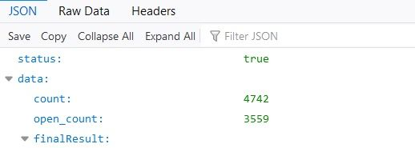
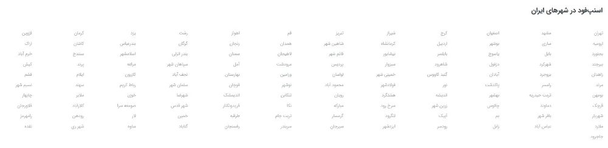
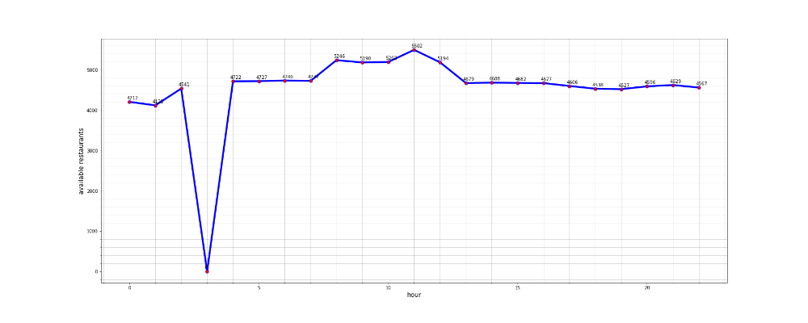
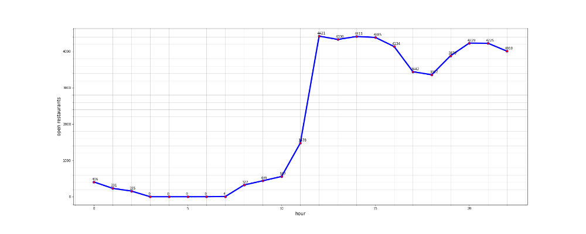
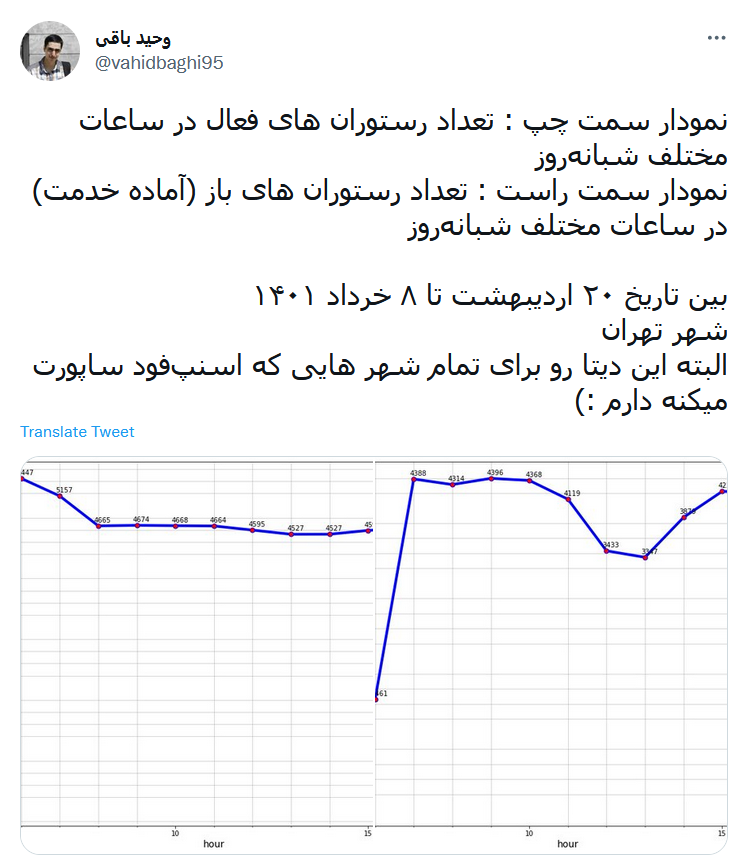

اگر دقت کنید، در اپلیکیشن اسنپفود تعداد رستوران های باز رو مینویسه. این سوال برای من به وجود اومد که در ساعات مختلف شبانه روز چند تا رستوران فعال وجود داره؟! با استفاده از لینک زیر میتونید تعداد رستوران های فعال و باز (آماده خدمت) رو مشاهده کنید :
اون آخر من اسم شهر رو tehran گذاشتم. نتیجهای که برمیگردونه چیزی شبیه به تصویر زیره :

چیزی که به نظر میرسه count تعداد رستوران های فعال رو نشون میده. یعنی رستوران هایی که در حال حاضر با اسنپفود همکاری میکنن و open_count تعداد رستوران های باز (آماده خدمت) رو نشون میده. من اومدم یه برنامه روی سرور گذاشتم و از تاریخ ۲۰ اردیبهشت تا ۸ خرداد ۱۴۰۱، هر یک ساعت تعداد رستوران های باز و فعال رو جمع آوری کردم. البته نه فقط برای شهر تهران! برای تمام شهر هایی که اسنپ فود ساپورت میکنه! اسم این شهر ها در پایین سایت https://snappfood.ir نوشته شده :

مثلا تعداد رستوران های فعال در تهران به صورت زیره :

تعداد رستوران های باز هم در تهران به صورت زیر :

در توییتی که نوشته بودم حواسم نبود که باید ۴.۵ ساعت به زمان سرور اضافه کنم تا ساعت تهران رو نشون بده. اما دیتای بالا درسته اما اینکه واقعا اون ساعت از شبانهروز واقعا اون تعداد رستوران باز بوده یا نه رو نمیدونم. چون دیتا رو از API اسنپفود گرفتم.

nb.neighbours()
| title | date | |
|---|---|---|
| prev | کاله در توییتر چه میکند؟! | ۱۴۰۱/۰۳ |
| next | کبریت توکلی در توییتر چه میکند؟! | ۱۴۰۱/۰۳ |